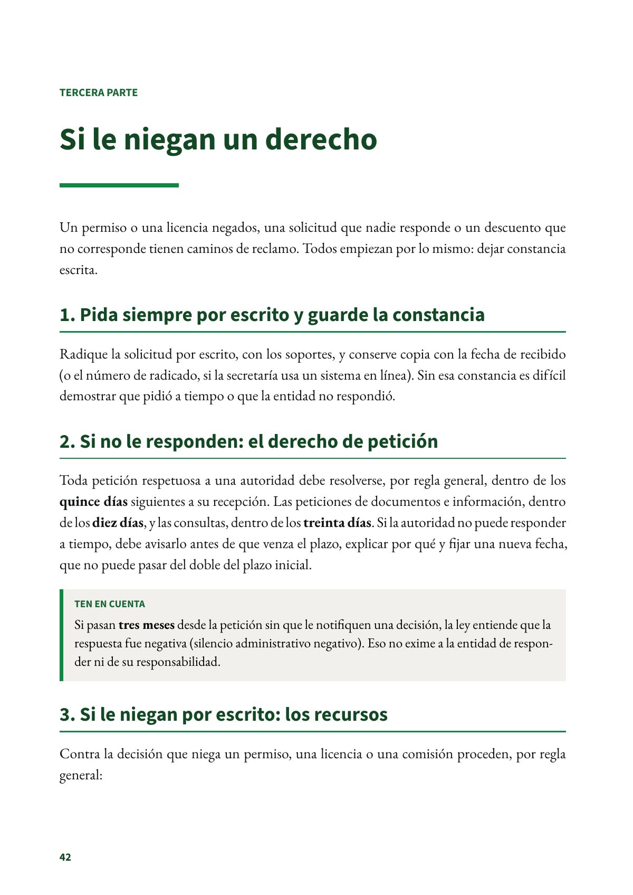
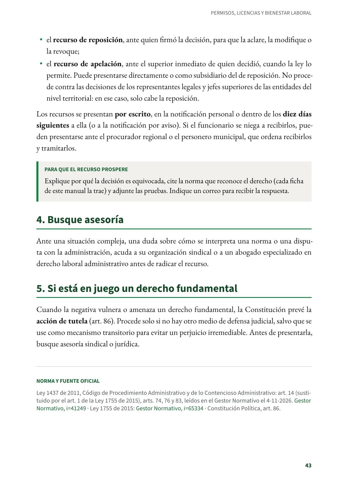

Si le niegan un derecho
Cómo reclamar cuando no responden o niegan: el derecho de petición, los recursos de reposición y apelación, y la tutela.
PDF · 2 págs. · 44 KBUn permiso o una licencia negados, una solicitud que nadie responde o un descuento que no corresponde tienen caminos de reclamo. Todos empiezan por lo mismo: dejar constancia escrita.
1. Pida siempre por escrito y guarde la constancia
Radique la solicitud por escrito, con los soportes, y conserve copia con la fecha de recibido (o el número de radicado, si la secretaría usa un sistema en línea). Sin esa constancia es difícil demostrar que pidió a tiempo o que la entidad no respondió.
2. Si no le responden: el derecho de petición
Toda petición respetuosa a una autoridad debe resolverse, por regla general, dentro de los quince días siguientes a su recepción. Las peticiones de documentos e información, dentro de los diez días, y las consultas, dentro de los treinta días. Si la autoridad no puede responder a tiempo, debe avisarlo antes de que venza el plazo, explicar por qué y fijar una nueva fecha, que no puede pasar del doble del plazo inicial.
Ten en cuenta
Si pasan tres meses desde la petición sin que le notifiquen una decisión, la ley entiende que la respuesta fue negativa (silencio administrativo negativo). Eso no exime a la entidad de responder ni de su responsabilidad.
3. Si le niegan por escrito: los recursos
Contra la decisión que niega un permiso, una licencia o una comisión proceden, por regla general:
- el recurso de reposición, ante quien firmó la decisión, para que la aclare, la modifique o la revoque;
- el recurso de apelación, ante el superior inmediato de quien decidió, cuando la ley lo permite. Puede presentarse directamente o como subsidiario del de reposición. No procede contra las decisiones de los representantes legales y jefes superiores de las entidades del nivel territorial: en ese caso, solo cabe la reposición.
Los recursos se presentan por escrito, en la notificación personal o dentro de los diez días siguientes a ella (o a la notificación por aviso). Si el funcionario se niega a recibirlos, pueden presentarse ante el procurador regional o el personero municipal, que ordena recibirlos y tramitarlos.
Para que el recurso prospere
Explique por qué la decisión es equivocada, cite la norma que reconoce el derecho (cada ficha de este manual la trae) y adjunte las pruebas. Indique un correo para recibir la respuesta.
4. Busque asesoría
Ante una situación compleja, una duda sobre cómo se interpreta una norma o una disputa con la administración, acuda a su organización sindical o a un abogado especializado en derecho laboral administrativo antes de radicar el recurso.
5. Si está en juego un derecho fundamental
Cuando la negativa vulnera o amenaza un derecho fundamental, la Constitución prevé la acción de tutela (art. 86). Procede solo si no hay otro medio de defensa judicial, salvo que se use como mecanismo transitorio para evitar un perjuicio irremediable. Antes de presentarla, busque asesoría sindical o jurídica.
Norma y fuente oficial
Ley 1437 de 2011, Código de Procedimiento Administrativo y de lo Contencioso Administrativo: art. 14 (sustituido por el art. 1 de la Ley 1755 de 2015), arts. 74, 76 y 83, leídos en el Gestor Normativo el 4-11-2026. Gestor Normativo · Ley 1755 de 2015: Gestor Normativo · Constitución Política, art. 86.
Así se ve en el libro
2 páginas
